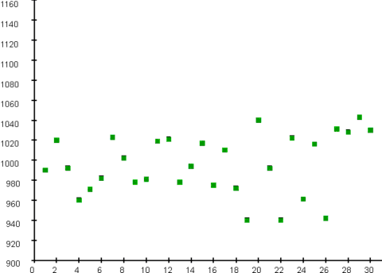
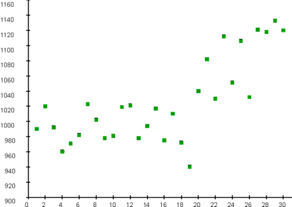

|
3.
Production
Process Characterization
3.1. Introduction to Production Process Characterization 3.1.3. Terminology/Concepts 3.1.3.2. Process Variability
|
|||
| Two trend plots | The two figures below are two trend plots from two different oxide growth processes. Thirty wafers were sampled from each process: one per day over 30 days. Thickness at the center was measured on each wafer. The x-axis of each graph is the wafer number and the y-axis is the film thickness in angstroms. | ||
| Examples of"in control" and "out of control" processes | The first process is an example of a process that is "in control" with random fluctuation about a process location of approximately 990. The second process is an example of a process that is "out of control" with a process location trending upward after observation 20. | ||
| This process exhibits controlled variation. Note the random fluctuation about a constant mean. |  | ||
| This process exhibits uncontrolled variation. Note the structure in the variation in the form of a linear trend. |  | ||